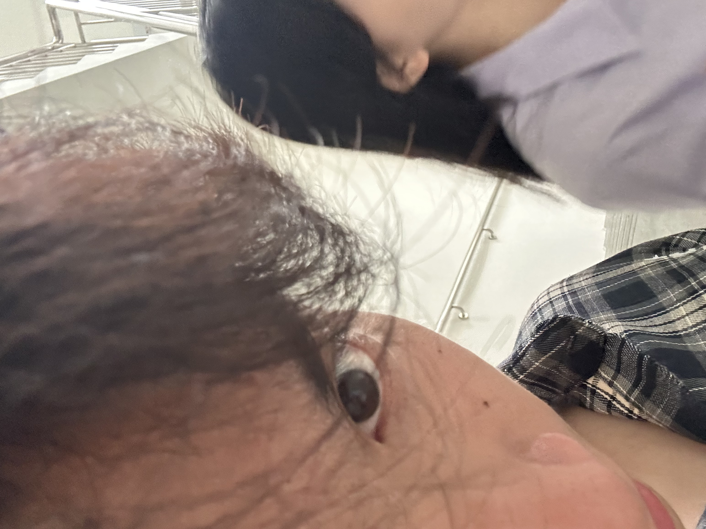
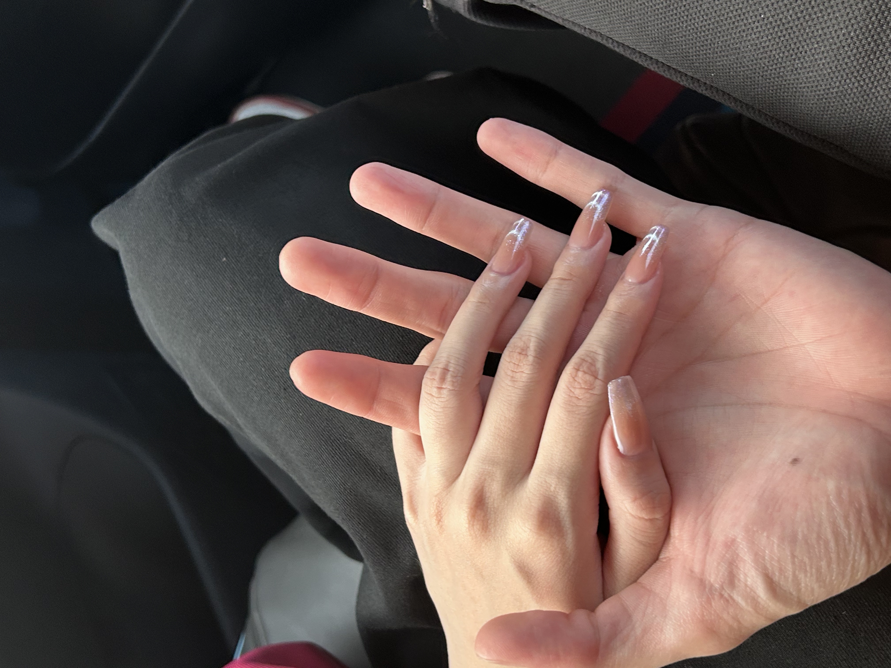

我想见你如金桔日落
从我第一次见到你的那一刻起，世界仿佛以一种全新的方式向我敞开。像远方的海浪轻抚岸边，你的存在让我感受到了前所未有的宁静与热烈。
如果可以选择，我愿在每一个清晨醒来时，第一眼看到的都是你。就像顾城所写："我们站着，不说话，就十分美好。"
黑夜给了我黑色的眼睛，我用他找到了我的光明
在看似平凡的日子里，每一个与你共度的时刻都闪烁着不平凡的光芒。你是我生命中最明亮的那束光，照亮了我所有的黑暗角落。
如果爱可以被描述，那么它一定是像海一样深沉，又像天空一样广阔的存在。而我愿意用余生的时间，去丈量这份感情的深度与广度。

挪威闪烁的雪粒的影子，是你眼眸的反光
无法触摸的世界，有了你好像是我的触觉感官，我仿佛又以新的感知和这个世界建立了新的链接
喜欢你，追求你，爱你，三句话是漫长的时节的迁徙，是古往今来最伟大的人类壮举，我想星际穿越的宗旨也就是展现这一伟大的灵长动物的壮举吧

你，一会看我，一会看云
每当我们并肩而行，你的目光时而落在我身上，时而望向远方，那一刻我便明白，爱是既亲密又自由的存在。
曼珈，如果可以，我想牵着你的手走过春夏秋冬，看遍世间所有美景，感受生命中每一次心动的瞬间。在这个广阔的世界里，我最想探索的，是你内心的广袤无垠的天地。

好像遇见你，就像是突然放弃了一种秩序井然的存在，将自己丢进一股旋风，开始以思想的速度穿越空间，我的轨迹稳稳向你
它既明亮又优雅，有着宇宙火焰般的复杂模式。就像周董唱的，而我独缺，，对你一生的了解，我想从此时间此刻开始了解你
所以 亲爱的冯曼珈小姐 你 愿意 做我的 女朋友吗？
冯曼珈，我爱你
如果你愿意，请让我成为那个陪你看日出日落的人。在每次朝阳起又落的时空，我们操控失控的时间撞向繁花似锦的未来。